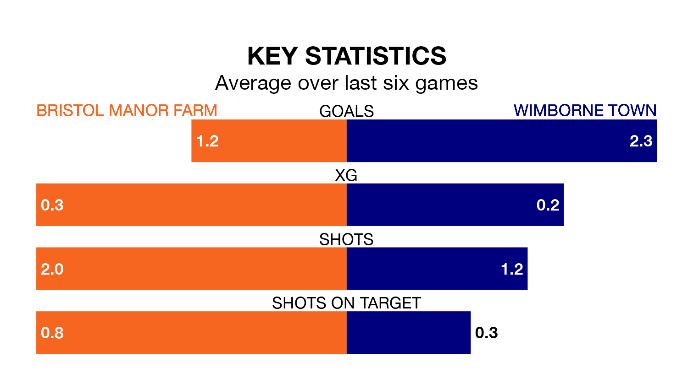

Wimborne Town travel to Bristol Manor Farm on Saturday in Southern League Division One South.
The visitors come into the game on the back of a win in their last match, having beaten Paulton Rovers 2-0 away.
Bristol Manor Farm also won their last match, 3-1 against Paulton Rovers.
With 45 goals in 21 games so far this season, Wimborne are the league's joint-highest scorers with 2.1 goals per game. And they are conceding fewer than average, letting in 24 goals at a rate of 1.1 per game.
Bristol Manor Farm, meanwhile, are below average scorers, with 1.6 goals per game, compared to a league average of 1.7. They have also conceded 1.6 goals per game.
Town are top of the table after 21 games, of which they have won 13 and drawn four, earning 43 points.
The hosts are seven places behind the away team in eighth, with eight wins and seven draws putting them on 31 points.
Bristol Manor Farm are in disappointing form in Southern League Division One South, with one win and two draws from their last six games.
With four wins and a draw over that period, Wimborne's form is much better – they have taken 13 points from 18, compared to Bristol Manor Farm's five.
In the last five years, Bristol Manor Farm and Wimborne have played each other on four occasions. Bristol Manor Farm won one of them, Wimborne two, and they drew once.
On average, Bristol Manor Farm scored 1.2 goals and Wimborne 2.2 in those matches.
Their last meeting was on October 14, when Wimborne won 4-0 at home.
Updated: 15:45 (UTC), 02/02/24